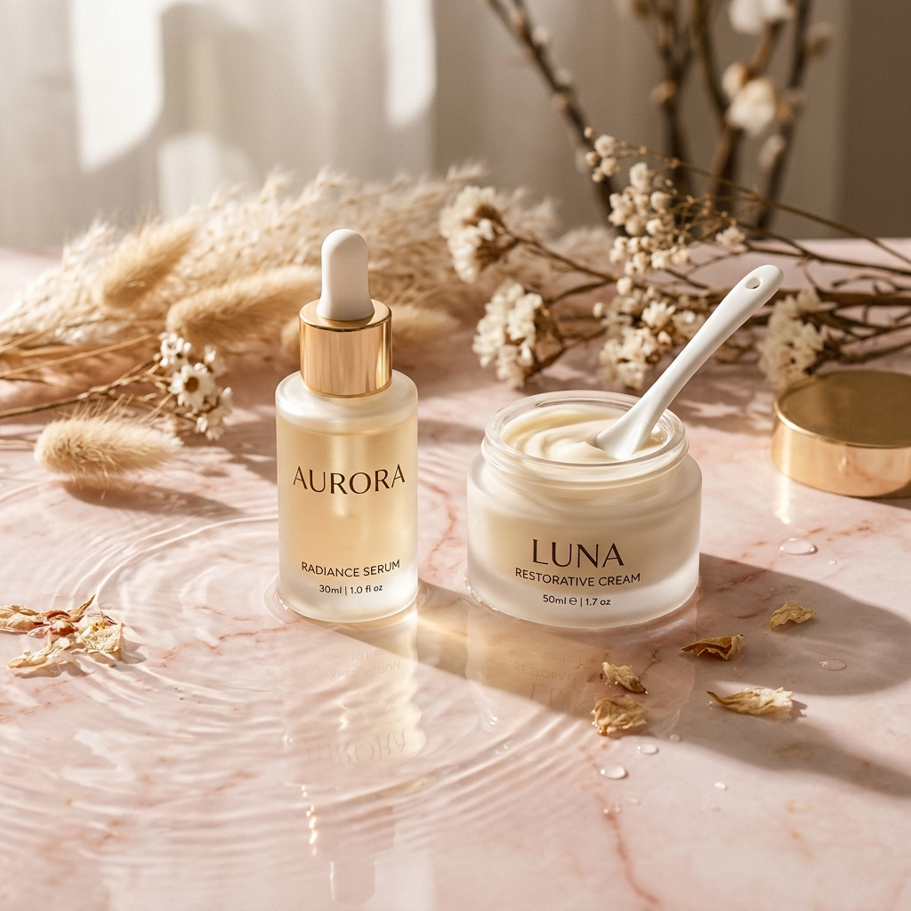
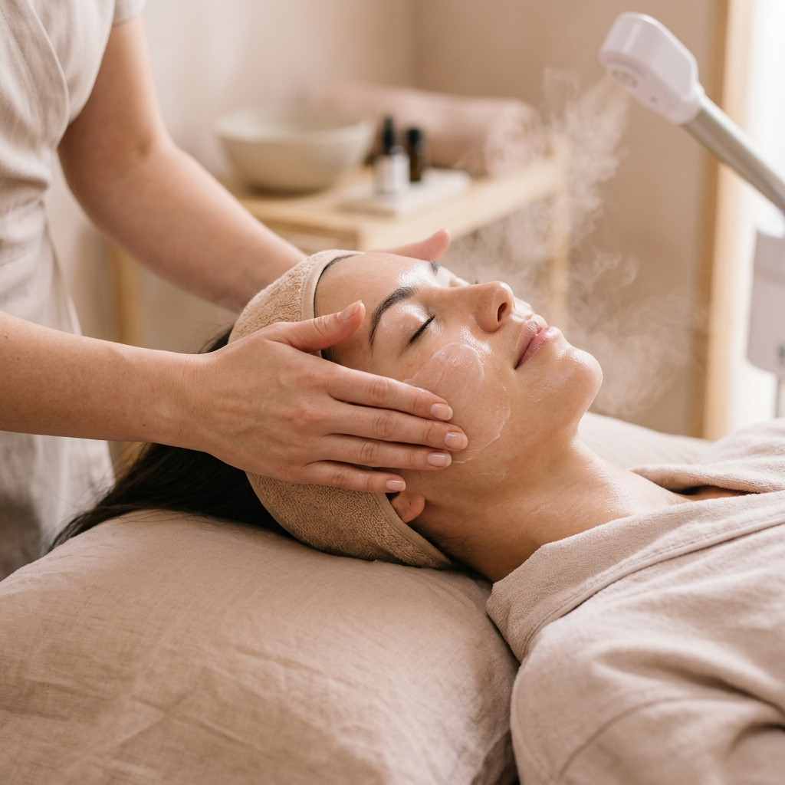

El arte de cuidar
tu propia piel
Ofrecemos tratamientos faciales y corporales de última generación, diseñados para resaltar tu belleza natural en un espacio de calma y bienestar en Pinamar.
Tratamientos a tu medida
Combinamos tecnología avanzada y cosmética de primer nivel para cuidar de vos. Seleccioná una categoría para ver los detalles.
Limpieza Profunda
Extracción de impurezas, puntos negros y células muertas. Devuelve el brillo y la salud natural a tu rostro preparando la piel para absorber mejor cualquier tratamiento diario.
- Desobstrucción de poros
- Renovación e hidratación
- Apto para todo tipo de piel
Peeling Químico / Físico
Aplicación de activos controlados para remover las capas externas de la piel. Ideal para tratar manchas, marcas de acné, líneas finas y unificar el tono cutáneo de forma progresiva.
- Suaviza la textura de la piel
- Atenúa manchas y secuelas
- Estimula el colágeno nuevo
Dermaplaning
Exfoliación física mediante un bisturí dermatológico que retira suavemente las células muertas de la epidermis y el vello facial fino (pelusa). Deja una piel extremadamente luminosa.
- Absorción máxima de productos
- Maquillaje con acabado perfecto
- Luminosidad inmediata al instante
Hydralips
Tratamiento de hidratación profunda y regeneración para labios secos o agrietados. Aporta un brillo sutil, define suavemente el contorno y resalta el color natural mediante microagujas sin dolor.
- Hidratación extrema inmediata
- Atenúa arrugas de los labios
- Efecto voluminoso y saludable
Microneedling (Dermapen)
Dispositivo de microagujas ultrafinas que realiza canales microscópicos para introducir principios activos (ácido hialurónico, vitaminas). Estimula fuertemente la elastina y el colágeno.
- Reduce poros y cicatrices
- Suaviza arrugas y líneas finas
- Rejuvenecimiento facial global
BB Glow
Tratamiento coreano que combina microneedling con sueros que contienen una ligera base de maquillaje semipermanente. Aporta una piel de porcelana, unifica el tono y reduce ojeras y rojeces.
- Piel efecto 'porcelana' diaria
- Camufla imperfecciones suaves
- Nutrición profunda con brillo
Hilos Sólidos (Colágeno)
Hilos reabsorbibles de colágeno y proteínas que se disuelven sobre la piel mediante un suero activador. Rellenan arrugas, líneas de expresión y aportan firmeza inmediata de forma indolora.
- Sin agujas ni tiempo de recuperación
- Relleno inmediato de arrugas
- Aporte masivo de colágeno
Hilos Líquidos
Tratamiento tensor a base de péptidos y activos reafirmantes concentrados que crean una malla tensora invisible sobre la piel. Combate la flacidez facial del óvalo de la cara y el cuello.
- Efecto tensor y reafirmante
- Define el contorno del rostro
- Hidratación y elasticidad
Tratamientos Anti-Age
Sesiones integrales personalizadas que combinan aparatología (alta frecuencia, radiofrecuencia o espátula) con activos antienvejecimiento premium para revitalizar pieles maduras o cansadas.
- Estimulación celular profunda
- Mejora la luminosidad y turgencia
- Diseño adaptado a tus necesidades
Tratamientos Corporales
Planes diseñados a medida del cuerpo: masajes tensores, reductores, drenaje linfático manual y exfoliación corporal nutritiva para sentirte renovada, ligera y tonificada.
- Reducción y moldeado corporal
- Combate la celulitis y flacidez
- Alivia tensiones y desintoxica
Descubrí tu rutina y tratamientos ideales
Respondé estas 3 preguntas rápidas y nuestro sistema te recomendará los tratamientos de Lupe Pinamar y productos que mejor se adaptan a tu tipo de piel.
¿Cómo sentís tu piel habitualmente durante el día?
¿Cuál es tu principal preocupación o lo que te gustaría mejorar?
¿Cómo es tu rutina de skincare actual en casa?
¡Tu diagnóstico personalizado está listo!
Tu Piel y Objetivo:
Cargando diagnóstico...
Tratamientos Lupe recomendados:
Plan de Skincare sugerido:
Cargando recomendación de productos...
Para armar tu rutina detallada, evaluar tu piel en camilla y adquirir los productos indicados, agenda un asesoramiento profesional presencial.
Productos Premium & Armado de Rutina
Los tratamientos en gabinete se potencian con los cuidados diarios. En Lupe Pinamar te brindamos asesoramiento integral y el armado de tu rutina paso a paso con productos de alta calidad formulados para cada necesidad cosmética.
Evaluación inicial
Analizamos las condiciones actuales de tu cutis, sensibilidad y nivel de hidratación.
Selección de activos
Indicamos los mejores ácidos, vitaminas o péptidos para tus objetivos específicos.
Seguimiento de rutina
Acompañamos tu proceso y adaptamos la rutina en base a la respuesta natural de tu piel.

Un espacio pensado exclusivamente para tu bienestar
Nuestra misión es ir más allá de la estética convencional. Buscamos brindarte un espacio de calma donde puedas desconectarte de la rutina diaria mientras cuidamos tu piel con la máxima delicadeza y profesionalismo.
Cada rostro y cada cuerpo cuenta una historia única. Por eso, no creemos en las soluciones genéricas: diseñamos tratamientos a la medida exacta de tus necesidades, priorizando la salud y el equilibrio biológico de tu piel.

Escribinos y reservá tu momento
Estamos ubicadas en Pinamar. Consultanos por WhatsApp o completá tus datos para agendar tu consulta personalizada.
Canales de Comunicación
-
WhatsApp / Reservas
-
Ubicación
Centro de Pinamar, Buenos Aires, Argentina
-
Horarios de Atención
Lunes a Sábado: 10:00 a 20:00 hs (Con turno previo)